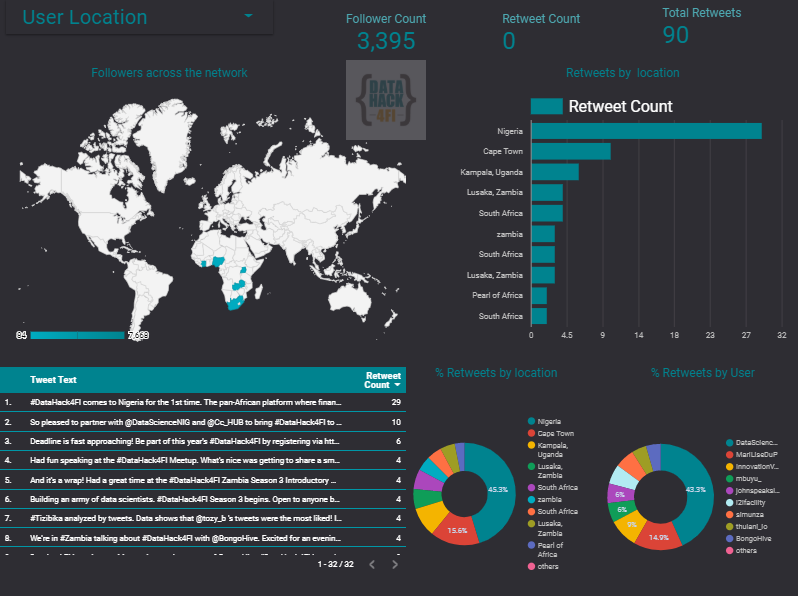
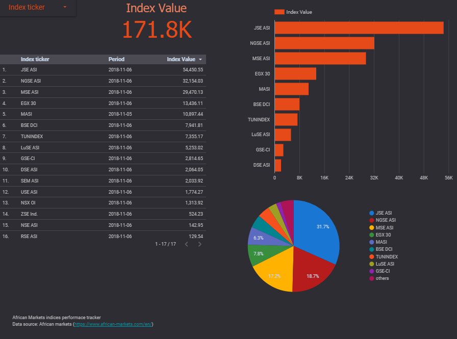
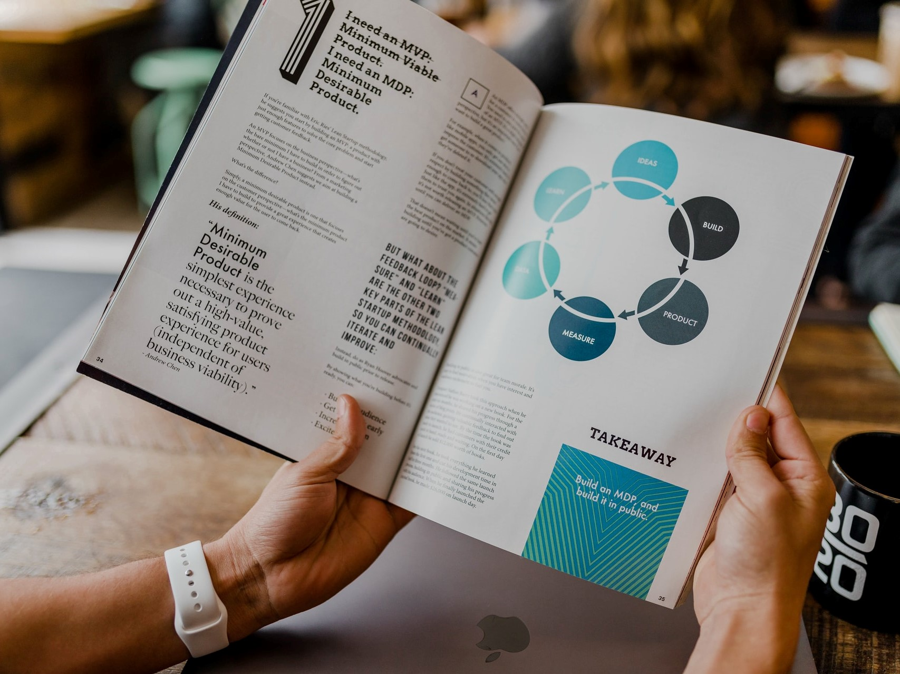

R . Data Science . Business Intelligence
Blog
Accomplishments
Blog
Categories
R
Stock market
analysis
apple
blogdown
datahack4fi
google
hugo
msft
open sourse
reflections
rmarkdown
twitter
Order By
Default
Title
Date - Oldest
Date - Newest
Author
Deploying Metabase through Heroku App
In this mini project, I deployed my first
Metabase
through the Heroku App. Metabase is an open source business intelligence engine. It allows for company wide sharing of…
Dec 26, 2018
Aaron Simumba
1 min

DataHack4Fi twitter data
datahack4fi
twitter
analysis
Scraping twitter data based on discussion under the #datahack4fi tag.
Nov 11, 2018
Aaron Simumba
1 min

African Markets indices tracker
Stock market
African Markets indices performance tracker. A minimal project tracking selected African markets indices. The data used in the dashboard comes from the African Markets websit…
Nov 7, 2018
Aaron Simumba
1 min
Money is everything, but you haven’t met Open Source Software maintainers
open sourse
For profit centred enterprises, it is not surprising when you encounter their overly aggressive marketing campaigns, which mostly have an end result of them trying to…
Feb 24, 2018
Aaron Simumba
2 min
Thoughts to Words - An Introduction to Aaron Simumba’s Website
blogdown
R
hugo
This post was originally submitted to the Rbind support website.
Feb 19, 2018
Aaron Simumba
5 min
Demo: Embedding Tableau public Visualizations
Through Tableau public integration
In this short demo, I implement how to embed Tableau public visualizations on the personal website.This implementation is achieved through using
iframe.
The embed link from…
Nov 12, 2017
Aaron Simumba
2 min

Breathing life back into PDF presented Data
Implementation through Tabulizer
rmarkdown
It is almost not surprising to find most of the summarised data is presented in the form of a report - whose format is mainly Portable Document Format (PDF). The challenge…
Oct 12, 2017
Aaron Simumba
7 min
Let twitter do the job
One of the most exciting things I’ve been able to do in the past few months, has been my rekindled interest in blogging. No matter how trivial the idea that comes to mind…
Oct 6, 2017
Aaron Simumba
2 min
Mapping the Location of Twitter Followers and Following in R
Twitter data mining
It is always nice to capture how wide and dense your twitter interactions spread. More so, the spread and locations of your twitter followers and those you are following.…
Oct 2, 2017
Aaron Simumba
5 min
Mobile and Internet Penetration in Zambia
In this post, I take an Exploratory Data Analysis (EDA) of the mobile phone and internet user data statistics for Zambia. Making use of the Zambia Information and…
Sep 27, 2017
Aaron Simumba
13 min
How to resolve hugo version conflicts with the default version on netlify
There is nothing as frustrating as getting stuck with a computer operation/code bug, which you know no better how to get around it. That was my frustration while trying to…
Sep 13, 2017
Aaron Simumba
2 min
One Year Anniversary
reflections
The 26 August 2017 marks exactly one year since embarking on learning the R programming language. A year ago I had neither the foresight nor will strength of believing I…
Aug 25, 2017
Aaron Simumba
4 min
Building a Website with Blogdown and Hugo
hugo
R
In this short post. I will detail my journey building my website using
blogdown
an
R
package that makes use of the static website generator
Hugo
. This is a great R package…
Jul 3, 2017
Aaron Simumba
2 min
What’s in the numbers: A look at the Lusaka Securities Exchange
In the next coming few weeks, I plan to do a series of posts specifically targeted at the Lusaka Securities Exchange (LuSE). Essentially, this idea came to mind after…
Apr 6, 2017
Aaron Simumba
7 min
Stocks Portfolio Analysis
google
apple
msft
Detailed stock analysis process.
Mar 17, 2017
Aaron Simumba
5 min
No matching items